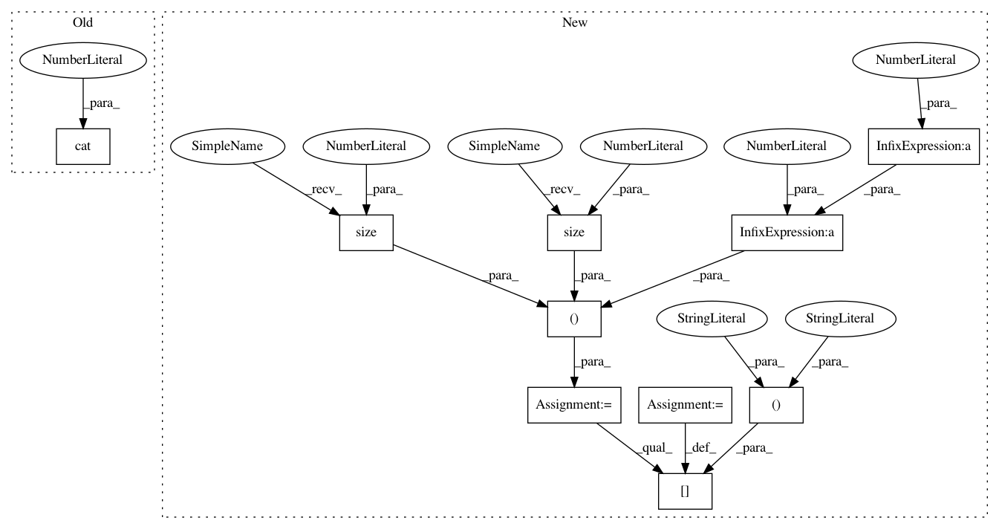

6dc79d867cea8e9ed4737d7449ad9481fd6492d2,s2cnn/soft/so3_fft.py,,_so3_fft,#Any#Any#Any#Any#,33
Before Change
for l in range(min(b_in, b_out)):
s = slice(l * (4 * l ** 2 - 1) // 3, l * (4 * l ** 2 - 1) // 3 + (2 * l + 1) ** 2)
xx = torch.cat((x[:, :, -l:], x[:, :, :l + 1]), dim=2) if l > 0 else x[:, :, :1]
xx = torch.cat((xx[:, :, :, -l:], xx[:, :, :, :l + 1]), dim=3) if l > 0 else xx[:, :, :, :1]
out = torch.einsum("bmn,zbmnc->mnzc", (wigner[:, s].view(-1, 2 * l + 1, 2 * l + 1), xx))
output[s] = out.view((2 * l + 1) ** 2, -1, 2)
After Change
s = slice(l * (4 * l ** 2 - 1) // 3, l * (4 * l ** 2 - 1) // 3 + (2 * l + 1) ** 2)
l1 = min(l, b_in - 1) // if b_out > b_in, consider high frequencies as null
xx = x.new_zeros((x.size(0), x.size(1), 2 * l + 1, 2 * l + 1, 2))
xx[:, :, l: l + l1 + 1, l: l + l1 + 1] = x[:, :, :l1 + 1, :l1 + 1]
if l1 > 0:
xx[:, :, l - l1:l, l: l + l1 + 1] = x[:, :, -l1:, :l1 + 1]
xx[:, :, l: l + l1 + 1, l - l1:l] = x[:, :, :l1 + 1, -l1:]
xx[:, :, l - l1:l, l - l1:l] = x[:, :, -l1:, -l1:]
out = torch.einsum("bmn,zbmnc->mnzc", (wigner[:, s].view(-1, 2 * l + 1, 2 * l + 1), xx))
In pattern: SUPERPATTERN
Frequency: 4
Non-data size: 10
Instances
Project Name: jonas-koehler/s2cnn
Commit Name: 6dc79d867cea8e9ed4737d7449ad9481fd6492d2
Time: 2018-08-07
Author: geiger.mario@gmail.com
File Name: s2cnn/soft/so3_fft.py
Class Name:
Method Name: _so3_fft
Project Name: mariogeiger/se3cnn
Commit Name: 65f5a9006cf5e7e8daef6187e7987d7792f0feb6
Time: 2018-06-12
Author: geiger.mario@gmail.com
File Name: se3_cnn/non_linearities/gated_activation.py
Class Name: GatedActivation
Method Name: forward
Project Name: mariogeiger/se3cnn
Commit Name: aa7c004df5c781fc3b5b8131d7a9e64fd196203e
Time: 2018-05-26
Author: geiger.mario@gmail.com
File Name: se3_cnn/blocks/gated_block.py
Class Name: GatedBlock
Method Name: forward
Project Name: jonas-koehler/s2cnn
Commit Name: 6dc79d867cea8e9ed4737d7449ad9481fd6492d2
Time: 2018-08-07
Author: geiger.mario@gmail.com
File Name: s2cnn/soft/so3_fft.py
Class Name:
Method Name: _so3_rfft
Project Name: jonas-koehler/s2cnn
Commit Name: 6dc79d867cea8e9ed4737d7449ad9481fd6492d2
Time: 2018-08-07
Author: geiger.mario@gmail.com
File Name: s2cnn/soft/so3_fft.py
Class Name:
Method Name: _so3_fft